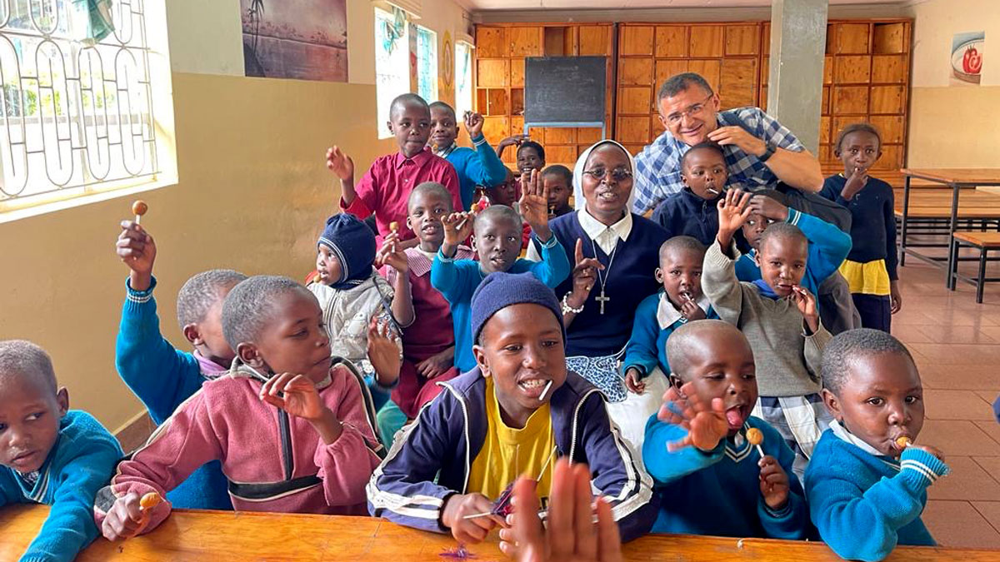
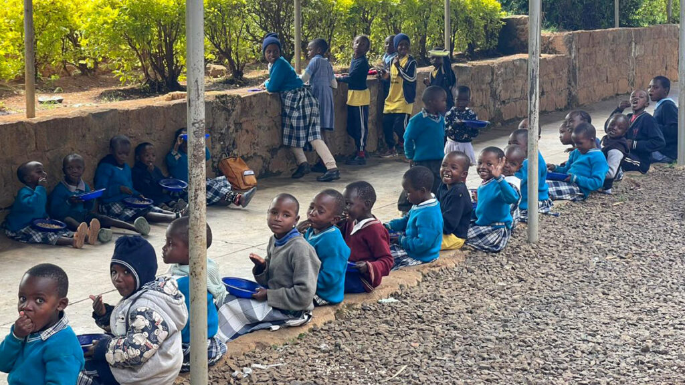
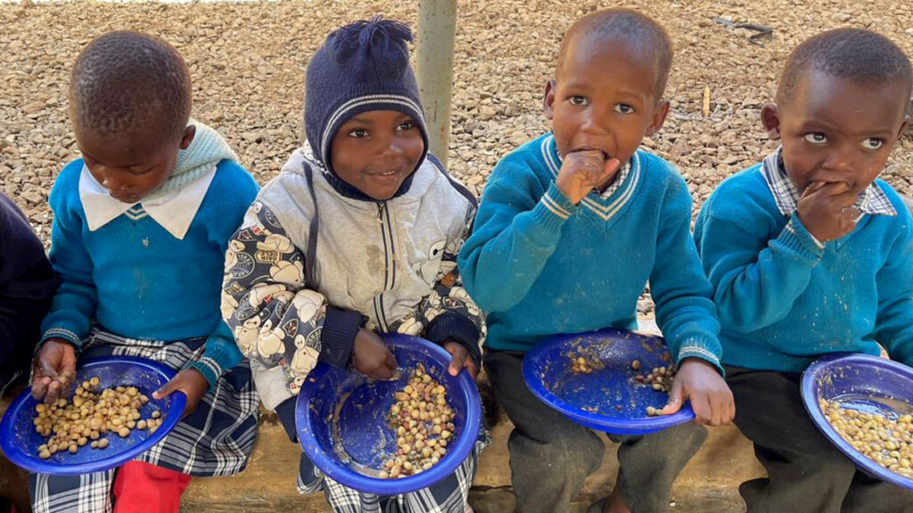

Children with nowhere to go have had a home here since 1993.
Fr. Baldo Children's Home is in Ndaragwa, Nyandarua County, on the equator, 211 kilometres north-west of Nairobi. Around a hundred children live here, from babies to students in college. The Little Daughters of St. Joseph run it, and the parish that started it still holds it as its own work.
Or call the home on 0710 238 132
"Improve the quality of lives of disadvantaged children: abandoned babies, street children, children orphaned through HIV and AIDS, and children who have been abused or neglected."
The home's own statement of its goal, from its background document.
How the home works
Children are brought here through the local authorities, and through the parish. Most were found living on the street, or lost parents in the years when AIDS emptied whole households in this part of Nyandarua.
The home does not try to keep them for life. Where there is family, it works at getting the child back to that family. Where there is none, adoption is looked at instead.
School is not optional. The home pays fees from nursery through to university, and for vocational courses in carpentry, embroidery and masonry where a child is better suited to a trade.

Some of it is easier to watch than to read
Rotary filmed a visit in 2015, for the Italian donors who built the dormitories. It shows the compound, the classrooms and the farm where the food is grown.
The farm matters more than it sounds. Maize, wheat, vegetables, milk and eggs come off that land and go into the kitchen. The surplus is sold at the market in Ndaragwa and pays the water and the electricity.
Where it came from
- 1993
- Parishioners at Ndaragwa, led by Fr. Gerald Mathenge, start taking in orphans and street children. It registers as a community based organisation.
- 2000
- The parish hands management to the Little Daughters of St. Joseph.
- 2004
- The dormitories open, built with about 450,000 euros raised by Rotary District 2030 in Italy.
- 2014
- Solar panels go on the roofs and the irrigation on the farm is rebuilt.
- 2020
- A minibus is bought so the children can get to the schools in the area.
- Now
- The ten year Rotary agreement has ended. The home runs on its farm, on a handful of Italian and British supporters, and on what it can raise.
What the home is short of
- Secondary school feesFees, uniforms and books, three terms a year.
- A new kitchenNamed in the home's own list of needs.
- School uniformsFor children joining the state schools nearby.
- Water storageThe supply reaches the compound about twice a week.

Give to the home
By card from anywhere in the world, or by M-Pesa if you are in Kenya. Pick an amount or put in your own. The money goes to the home's account and is spent on food, fees, uniforms and medicine.
The home is a registered community based organisation under Ndaragwa Catholic Parish. Your receipt comes by email straight away.
Card details are entered on the payment provider's page and are never stored on this site.
Ask the home anything
The sisters answer their own phone and email. Visiting arrangements, one child's fees, a grant application: ask them.